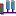

Motion Perfect has several tools which are used to monitor the controller and interact with it. Some tools are built into Motion Perfect, others are implemented as add-ons. The add-on mechanism allows the easy addition of extra tools in the future. Most tools are available in both "Tool Mode" and "Sync Mode".
Most tools can be accessed using the Main Toolbar and all tools can be accessed using the “ Tools ” section of the main menu.
Terminal – direct interaction with the controller's command line and character I/O
Axis Parameters – view and change the control parameters for each axis
Digital I/O Viewer – view and change digital I/O values
Analogue I/O Viewer – view and change analogue I/O values
Table Viewer – view and change values in TABLE memory
VR Viewer – view and change global VR variables
Watch Variables – view and change program internal variables
Options – change the configuration options for Motion Perfect
Diagnostics – enable and disable diagnostic functions
Jog Axes – manually jog the control axes
Manage Simulators – Used to manage running instances of the MC400 controller simulator.
Add-on tools are normally installed with Motion Perfect from the Motion Perfect installer.
Oscilloscope – capture and view parameters graphically
 Intelligent Drives – configure intelligent drives
Other add-on tools have their own help files